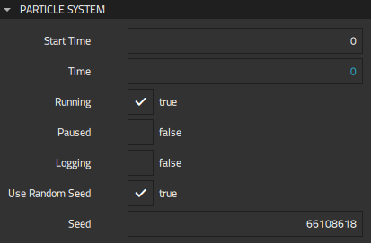

Particle System
The preset Particle System component is the root of the particle system. It ties all the other components together and manages the shared progression in time. Emitters and affectors must either be children of the same Particle System component or refer to the same System to be able to interact with each other.
You can add several Particle System components. Typically, you would use separate Particle System instances for the components that interact with each other. Or, you can use just one instance if the total number of components is small enough to be controllable.
Specify settings for the particle system in Properties > Particle System.

You can freely animate the particle system property values using a timeline, which enables you to synchronize particles with other animations, for example.
In Start time, set the time in milliseconds where the system starts. This can be useful to warm up the system so that a set of particles has already been emitted when the simulation starts. For example, if you set the start time to 2000 and animate Time from 0 to 1000, the animation shows particles from 2000 ms to 3000 ms.
In Time, set the time in milliseconds for the system. If you modify the value of this property, you should usually disable Running to stop the simulation. All particles are destroyed when you select it again.
To temporarily stop the simulation, select Paused. Particles are not destroyed, and when you deselect the check box, the simulation resumes from the point where you paused it.
Select Logging to collect particle system statistics, such as the current and maximum amounts of particles in the system or the average time in milliseconds used for emitting and animating particles in each frame. Logging data can be useful when developing and optimizing the particle effects.
Note: Logging can negatively affect performance, so it should be disabled before packaging applications for release and delivery to users.
Select Use random seed to randomize the particle system with the seed that you specify in Seed to get an identical pixel-perfect particle effect on every run. You should not modify the seed value during particle animation.